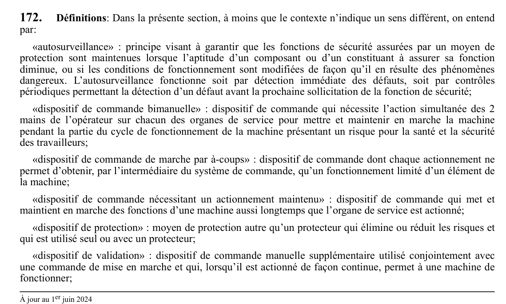

art-172-RSST : définitions
Définitions: Dans la présente section, à moins que le contexte n'indique un sens différent, on entend par: «autosurveillance» : principe visant à garantir que les fonctions de sécurité assurées par un moyen de protection sont maintenues lorsque l'aptitude d'un composant ou d'un constituant à assurer sa fonction diminue, ou si les conditions de...
🌐 LegisQuébec · 📄 PDF officiel
Texte officiel
Définitions : Dans la présente section, à moins que le contexte n’indique un sens différent, on entend par:
«autosurveillance» : principe visant à garantir que les fonctions de sécurité assurées par un moyen de protection sont maintenues lorsque l’aptitude d’un composant ou d’un constituant à assurer sa fonction diminue, ou si les conditions de fonctionnement sont modifiées de façon qu’il en résulte des phénomènes dangereux. L’autosurveillance fonctionne soit par détection immédiate des défauts, soit par contrôles périodiques permettant la détection d’un défaut avant la prochaine sollicitation de la fonction de sécurité;
«dispositif de commande bimanuelle» : dispositif de commande qui nécessite l’action simultanée des 2 mains de l’opérateur sur chacun des organes de service pour mettre et maintenir en marche la machine pendant la partie du cycle de fonctionnement de la machine présentant un risque pour la santé et la sécurité des travailleurs;
«dispositif de commande de marche par à-coups» : dispositif de commande dont chaque actionnement ne permet d’obtenir, par l’intermédiaire du système de commande, qu’un fonctionnement limité d’un élément de la machine;
«dispositif de commande nécessitant un actionnement maintenu» : dispositif de commande qui met et maintient en marche des fonctions d’une machine aussi longtemps que l’organe de service est actionné;
«dispositif de protection» : moyen de protection autre qu’un protecteur qui élimine ou réduit les risques et qui est utilisé seul ou avec un protecteur;
«dispositif de validation» : dispositif de commande manuelle supplémentaire utilisé conjointement avec une commande de mise en marche et qui, lorsqu’il est actionné de façon continue, permet à une machine de fonctionner;
«équipement de protection sensible» : équipement conçu pour détecter une personne ou une partie de son corps et envoyer au système de commande un signal destiné à réduire le risque auquel est exposée la personne détectée, notamment:
1° un dispositif électrosensible tel qu’un dispositif de protection optoélectronique actif notamment les rideaux lumineux et les scanneurs mettant en œuvre le rayonnement laser;
2° un dispositif sensible à la pression tel qu’un tapis, une barre, un bord et un câble;
«équipement interchangeable» : équipement destiné à être installé sur une machine et pouvant l’être par l’opérateur lui-même afin de changer la fonction de celle-ci ou d’y apporter une nouvelle fonction;
«fonction de sécurité» : fonction d’une machine dont la défaillance peut provoquer un accroissement immédiat du risque, celle-ci se rapporte à un moyen de protection dépendant d’un système de commande;
«moyen de protection» : protecteur ou dispositif de protection;
«organe de service» : organe permettant à un opérateur de commander la machine, généralement au moyen d’une pression de la main ou du pied, notamment un bouton-poussoir, un levier, un commutateur, une poignée, un curseur, un manche, un volant, une pédale, un clavier ou un écran tactile;
«outil interchangeable» : outils tels que les lames, mèches ou godets d’excavation pouvant être installés sur une machine sans que la fonction de celle-ci ne soit altérée et sans y ajouter de nouvelles fonctions;
«partie du système de commande relative à la sécurité» : partie du système de commande qui répond à des signaux d’entrée et génère des signaux de sortie relatifs à la sécurité;
«protecteur» : barrière physique conçue comme un élément de la machine assurant une fonction de protection de la zone dangereuse, notamment un carter, un couvercle, un écran, une porte ou une enceinte;
«protecteur avec dispositif de verrouillage» : protecteur associé à un dispositif de verrouillage de manière à assurer, avec le système de commande de la machine, que les fonctions de la machine présentant un risque pour la santé et la sécurité des travailleurs qu’il vise à protéger ne peuvent pas s’accomplir tant qu’il n’est pas fermé, que sa fermeture ne déclenche pas par elle-même ces fonctions et qu’un ordre d’arrêt soit donné s’il est ouvert pendant que de telles fonctions s’accomplissent;
«protecteur avec dispositif d’interverrouillage» : protecteur associé à un dispositif de verrouillage et à un dispositif de blocage, de manière à assurer, avec le système de commande de la machine, que les fonctions de la machine présentant un risque pour la santé et la sécurité des travailleurs qu’il vise à protéger ne peuvent pas s’accomplir tant qu’il n’est pas fermé et bloqué, que sa fermeture et son blocage ne déclenchent pas par eux- mêmes ces fonctions et qu’il reste bloqué en position de fermeture jusqu’à ce que le risque dû à de telles fonctions ait disparu;
«protecteur à fermeture automatique» : protecteur mobile mû par un élément constitutif de la machine, par la pièce travaillée ou par un élément du montage d’usinage de façon à laisser passer cette pièce ou un tel montage et qui revient automatiquement à la position fermée, notamment par gravité, au moyen d’un ressort ou d’une autre énergie externe, dès que l’ouverture est libérée;
«protecteur commandant la mise en marche» : protecteur avec dispositif de verrouillage qui, dès qu’il atteint la position fermée, délivre un ordre destiné à déclencher la fonction de la machine présentant un risque pour la santé et la sécurité des travailleurs sans qu’il soit nécessaire d’actionner une commande séparée de mise en marche;
«protecteur fixe» : protecteur fixé au moyen notamment de vis, d’écrous ou de soudure, de sorte qu’il ne peut être ouvert ou démonté qu’à l’aide d’outils ou par la destruction des moyens de fixation;
«protecteur mobile» : protecteur pouvant être ouvert sans l’utilisation d’outils. L’ouverture et la fermeture d’un tel protecteur peuvent être motorisées;
«protecteur réglable manuellement» : protecteur dont le réglage est effectué à la main et qui demeure fixe pendant une opération particulière;
«zone dangereuse» : toute zone située à l’intérieur ou autour d’une machine et qui présente un risque pour la santé, la sécurité ou l’intégrité physique des travailleurs.
Texte de l’article 172 RSST, extrait de la couche texte du PDF officiel (page 51), sans OCR ni retouche. La capture ci-dessous et le PDF font foi.
{kind=link}

Toucher l'image pour l'agrandir🔗 Voir art. 172 RSST dans le PDF (page 51) · texte à jour au 1er juin 2024
📚 Source légale : D. 885-2001, a. 172; D. 1112-2023, a. 3. · LégisQuébec
Voir aussi
- art. 173 : objet
- ⚖️ Loi habilitante : LSST
- ↑ Index du bloc : Machines
Pages qui pointent ici (3)
- art-173-RSST : objet Recueil législatif
- RSST Recueil législatif
- RSST : Section 21 : Machines Recueil législatif